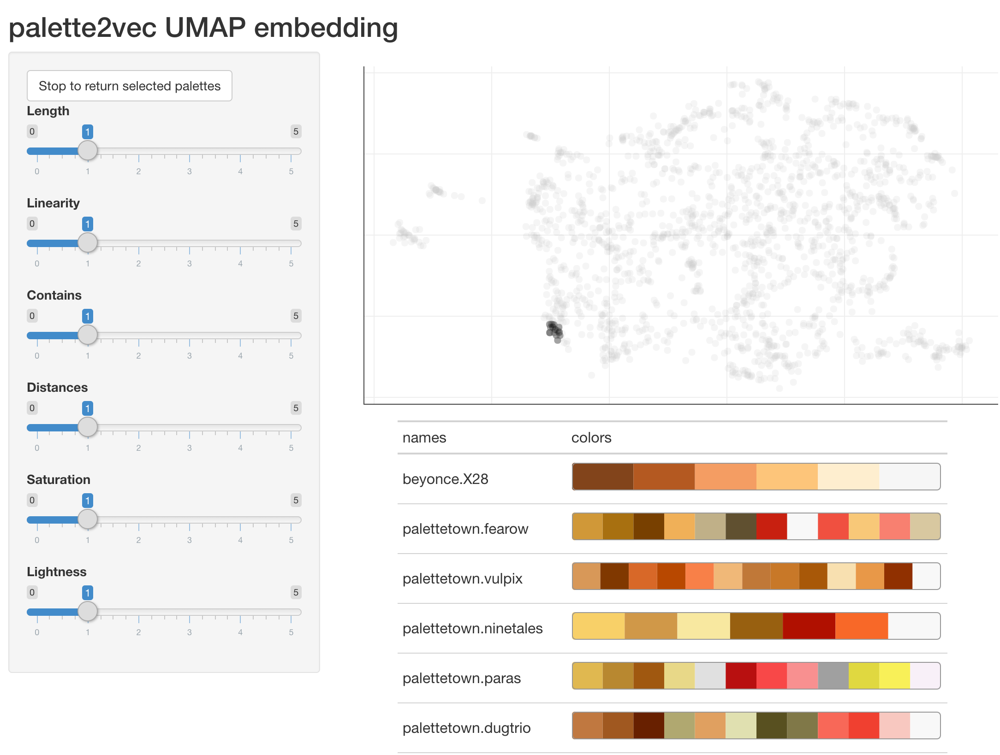
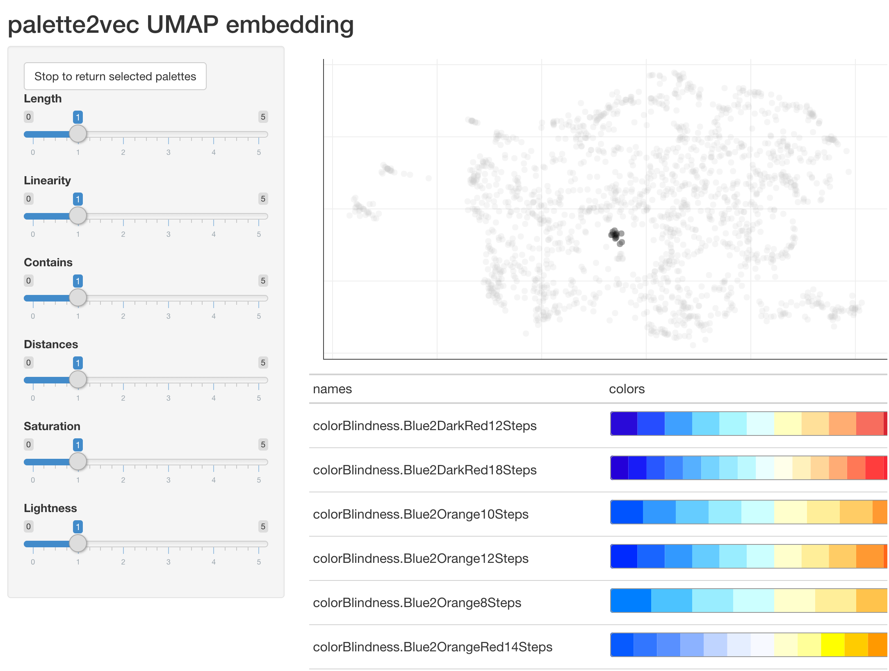

The goal of palette2vec is to help you explore color palettes more easily in R.
Installation
You can install the development version from GitHub with:
# install.packages("devtools") devtools::install_github("EmilHvitfeldt/palette2vec")
Examples
The main function in this package is palette2vec() it takes a named list of color palettes and returns a tibble of metrics for each palettes.
library(palette2vec) palette2vec(color_hex_palettes) #> # A tibble: 993 x 29 #> name n_cols linear linear_split min_dist max_dist mean_dist min_saturation #> <chr> <int> <dbl> <dbl> <dbl> <dbl> <dbl> <dbl> #> 1 Ann … 5 0.935 0.920 9.42 48.0 25.5 0 #> 2 i he… 5 1.00 1 3.92 26.6 13.6 50.7 #> 3 the … 5 1.00 1 5.54 30.5 15.1 15.3 #> 4 my m… 5 1.00 1 4.72 21.3 10.6 45.4 #> 5 hty 5 0.845 0.949 3.99 38.4 17.3 0 #> 6 my h… 5 1.00 1 6.19 36.4 21.1 11.0 #> 7 my s… 5 1.00 1 6.47 28.6 14.5 28.5 #> 8 a w … 5 1.00 1 4.50 21.1 10.5 22.1 #> 9 you … 5 1.00 1 5.38 34.4 17.6 8.66 #> 10 just… 5 1.00 1 6.01 33.9 18.3 11.2 #> # … with 983 more rows, and 21 more variables: max_saturation <dbl>, #> # mean_saturation <dbl>, min_lightness <dbl>, max_lightness <dbl>, #> # mean_lightness <dbl>, contains_min_red <dbl>, contains_min_orange <dbl>, #> # contains_min_yellow <dbl>, contains_min_green <dbl>, #> # contains_min_turqouise <dbl>, contains_min_blue <dbl>, #> # contains_min_purple <dbl>, contains_min_pink <dbl>, contains_all_red <dbl>, #> # contains_all_orange <dbl>, contains_all_yellow <dbl>, #> # contains_all_green <dbl>, contains_all_turqouise <dbl>, #> # contains_all_blue <dbl>, contains_all_purple <dbl>, contains_all_pink <dbl>
All the discrete palettes from paletteer have been added to this package as the paletteer_palettes() function
head(paletteer_palettes()) #> $awtools.a_palette #> [1] "#2A363B" "#019875" "#99B898" "#FECEA8" "#FF847C" "#E84A5F" "#C0392B" #> [8] "#96281B" #> #> $awtools.ppalette #> [1] "#F7DC05" "#3d98d3" "#EC0B88" "#5e35b1" "#f9791e" "#3dd378" "#c6c6c6" #> [8] "#444444" #> #> $awtools.bpalette #> [1] "#c62828" "#f44336" "#9c27b0" "#673ab7" "#3f51b5" "#2196f3" "#29b6f6" #> [8] "#006064" "#009688" "#4caf50" "#8bc34a" "#ffeb3b" "#ff9800" "#795548" #> [15] "#9e9e9e" "#607d8b" #> #> $awtools.gpalette #> [1] "#d6d6d6" "#adadad" "#707070" "#333333" #> #> $awtools.mpalette #> [1] "#017a4a" "#FFCE4E" "#3d98d3" "#ff363c" "#7559a2" "#794924" "#8cdb5e" #> [8] "#d6d6d6" "#fb8c00" #> #> $awtools.spalette #> [1] "#9F248F" "#FFCE4E" "#017a4a" "#f9791e" "#244579" "#c6242d"
Which can be passed to palette2vec() as well.
palette2vec(paletteer_palettes()) #> # A tibble: 1,711 x 29 #> name n_cols linear linear_split min_dist max_dist mean_dist min_saturation #> <chr> <int> <dbl> <dbl> <dbl> <dbl> <dbl> <dbl> #> 1 awto… 8 0.963 0.975 9.52 67.4 40.5 16.8 #> 2 awto… 8 0.688 0.749 25.9 89.8 47.6 0 #> 3 awto… 16 0.840 0.921 10.3 87.2 42.2 0 #> 4 awto… 4 0.998 1 10.5 62.4 32.3 0 #> 5 awto… 9 0.814 0.962 20.6 72.8 43.5 0 #> 6 awto… 6 0.674 1 27.4 73.3 47.8 54.1 #> 7 base… 10 0.857 0.889 15.6 77.0 41.1 20.9 #> 8 base… 10 0.820 0.827 13.4 83.9 45.3 28.0 #> 9 base… 10 0.791 0.736 11.8 79.4 43.9 35.3 #> 10 base… 10 0.823 0.975 15.9 88.8 46.4 41.5 #> # … with 1,701 more rows, and 21 more variables: max_saturation <dbl>, #> # mean_saturation <dbl>, min_lightness <dbl>, max_lightness <dbl>, #> # mean_lightness <dbl>, contains_min_red <dbl>, contains_min_orange <dbl>, #> # contains_min_yellow <dbl>, contains_min_green <dbl>, #> # contains_min_turqouise <dbl>, contains_min_blue <dbl>, #> # contains_min_purple <dbl>, contains_min_pink <dbl>, contains_all_red <dbl>, #> # contains_all_orange <dbl>, contains_all_yellow <dbl>, #> # contains_all_green <dbl>, contains_all_turqouise <dbl>, #> # contains_all_blue <dbl>, contains_all_purple <dbl>, contains_all_pink <dbl>
Interactivity
palette2vec contains 2 functions to allow you to interactively explore color palettes.
Nearest neighbor palettes
The first function is nn_palettes(), this function will take a named list of color palettes and launch a shiny application. This shiny app contains a dropdown menu and some sliders. Use the dropdown menu to select a palette, and the table on the right will show said palette and its closest neighbors in palette2vec space. The sliders can be used to assign weights to different metrics.
nearest_palettes <- nn_palettes(paletteer_palettes())

You can return the showcased palettes by clicking the button at the upper left corner.
nearest_palettes#> $ggthemes.excel_Blue
#> [1] "#0F6FC6" "#009DD9" "#0BD0D9" "#10CF9B" "#7CCA62" "#A5C249"
#>
#> $ggthemes.excel_Green
#> [1] "#549E39" "#8AB833" "#C0CF3A" "#029676" "#4AB5C4" "#0989B1"
#>
#> $LaCroixColoR.Lime
#> [1] "#2CB11B" "#95C65C" "#BDDE9B" "#1BB6AF" "#0076C0" "#172869"
#>
#> $rcartocolor.ag_GrnYl
#> [1] "#245668" "#0F7279" "#0D8F81" "#39AB7E" "#6EC574" "#A9DC67" "#EDEF5D"
#>
#> $rcartocolor.BluYl
#> [1] "#f7feae" "#b7e6a5" "#7ccba2" "#46aea0" "#089099" "#00718b" "#045275"
#>
#> $ggthemes.excel_Green_Yellow
#> [1] "#99CB38" "#63A537" "#37A76F" "#44C1A3" "#4EB3CF" "#51C3F9"
#>
#> $Redmonder.qMSOBu
#> [1] "#DBEFF9" "#17406D" "#0F6FC6" "#009DD9" "#0BD0D9" "#10CF9B" "#7CCA62"
#> [8] "#A5C249"
#>
#> $rcartocolor.Emrld
#> [1] "#d3f2a3" "#97e196" "#6cc08b" "#4c9b82" "#217a79" "#105965" "#074050"
#>
#> $fishualize.Elagatis_bipinnulata
#> [1] "#1a91eb" "#144c69" "#07868c" "#49a85f" "#81e74a"
#>
#> $fishualize.Chlorurus_spilurus
#> [1] "#a790db" "#4a79bc" "#00a5ff" "#04eab8" "#d8d643"UMAP projection
The second function is umap_embedding(), this function will take a named list of color palettes and launch a shiny application. You will have sliders this time around which performs the same operations as they do in nn_palettes(), but this time you have a plotly() chart where each point is a color palette projected to 2 dimensions using UMAP from palette2vec space. You can selection different regions and the corresponding palettes will be showcased
umap_selected <- umap_embedding(paletteer_palettes())


You can return the selected palettes by clicking the button at the upper left corner.
umap_selected#> $colorBlindness.Blue2DarkRed12Steps
#> [1] "#290AD8" "#264DFF" "#3FA0FF" "#72D9FF" "#AAF7FF" "#E0FFFF" "#FFFFBF"
#> [8] "#FFE099" "#FFAD72" "#F76D5E" "#D82632" "#A50021"
#>
#> $colorBlindness.Blue2DarkRed18Steps
#> [1] "#2400D8" "#181CF7" "#2857FF" "#3D87FF" "#56B0FF" "#75D3FF" "#99EAFF"
#> [8] "#BCF9FF" "#EAFFFF" "#FFFFEA" "#FFF1BC" "#FFD699" "#FFAC75" "#FF7856"
#> [15] "#FF3D3D" "#F72735" "#D8152F" "#A50021"
#>
#> $colorBlindness.Blue2Orange10Steps
#> [1] "#0054FF" "#3299FF" "#65CCFF" "#99EDFF" "#CCFFFF" "#FFFFCC" "#FFEE99"
#> [8] "#FFCC65" "#FF9932" "#FF5500"
#>
#> $colorBlindness.Blue2Orange12Steps
#> [1] "#002AFF" "#1965FF" "#3299FF" "#65CCFF" "#99EDFF" "#CCFFFF" "#FFFFCC"
#> [8] "#FFEE99" "#FFCC65" "#FF9932" "#FF6619" "#FF2A00"
#>
#> $colorBlindness.Blue2Orange8Steps
#> [1] "#007FFF" "#4CC3FF" "#99EDFF" "#CCFFFF" "#FFFFCC" "#FFEE99" "#FFC34C"
#> [8] "#FF7F00"
#>
#> $colorBlindness.Blue2OrangeRed14Steps
#> [1] "#075AFF" "#3276FF" "#5990FF" "#8CB2FF" "#BFD4FF" "#E5EEFF" "#F7F9FF"
#> [8] "#FFFFCC" "#FFFF99" "#FFFF00" "#FFCC00" "#FF9900" "#FF6600" "#FF0000"Code of Conduct
Please note that the palette2vec project is released with a Contributor Code of Conduct. By contributing to this project, you agree to abide by its terms.